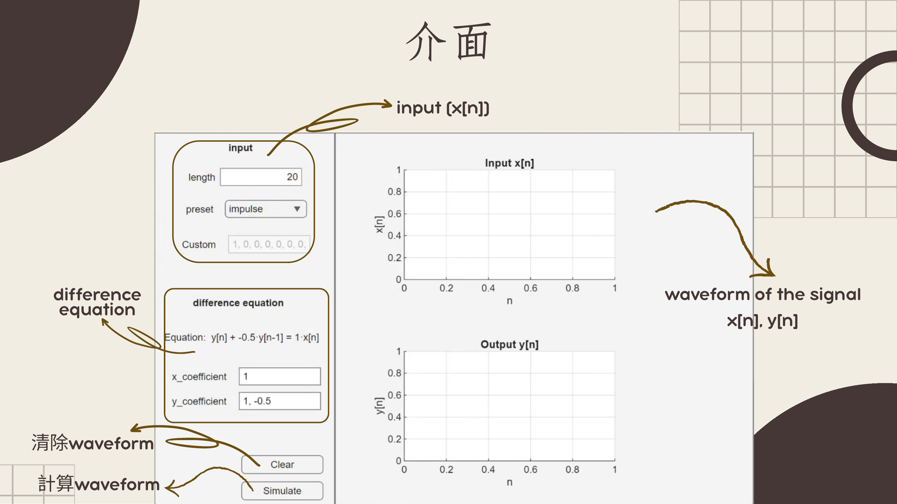
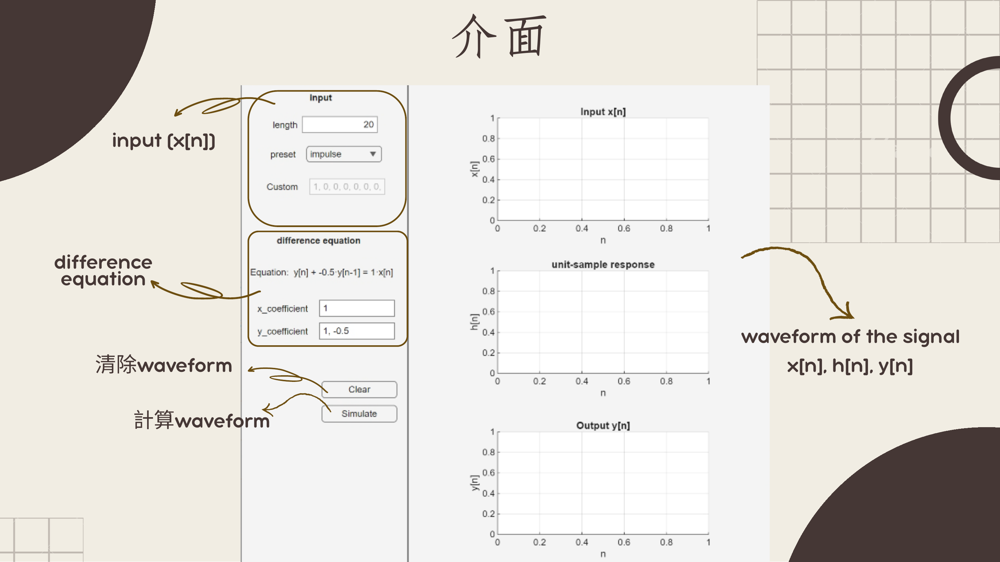
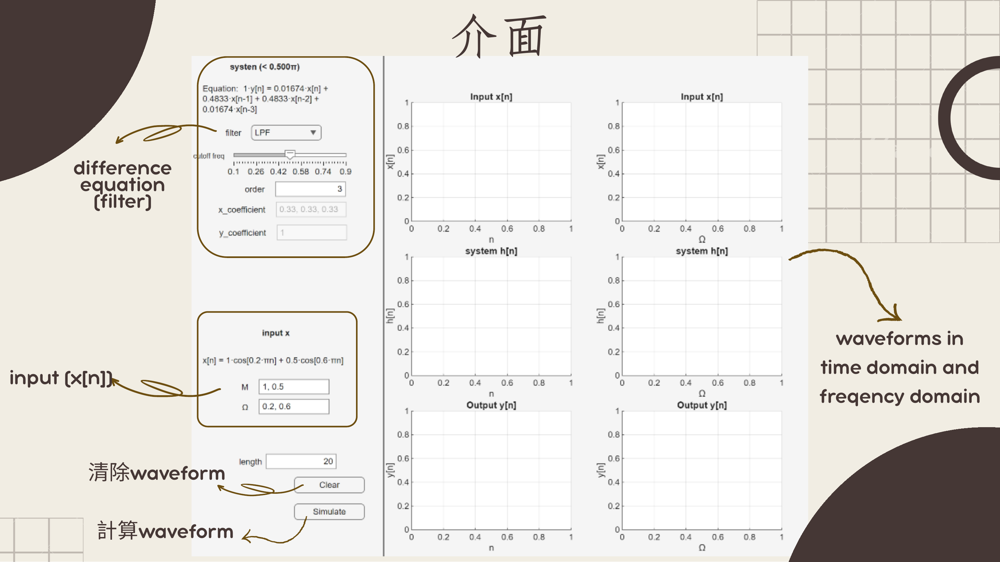

輸入訊號產生
前三種 preset 依長度自動產生訊號；custom 模式則由使用者輸入數值序列。
Signals and systems · MATLAB App Designer
將差分方程、線性卷積與濾波系統做成三個 MATLAB App Designer 工具，讓輸入訊號、系統響應與輸出結果能以圖形方式同步觀察。

01
這組作品把訊號與系統課程中的離散時間概念轉成可操作介面。使用者可以選擇 impulse、step、sine 或 custom 輸入，設定差分方程係數，並觀察 x[n]、h[n]、y[n] 的變化。
前三種 preset 依長度自動產生訊號；custom 模式則由使用者輸入數值序列。
以 x coefficient 與 y coefficient 建立離散時間系統，並即時更新方程式顯示。
使用 stem plot 呈現每個取樣點，避免把離散時間訊號誤看成連續曲線。
第三個工具加入 FFT 與濾波器設計，觀察輸入、系統與輸出在時域和頻域的對應。
02
第一個工具聚焦在離散時間差分方程本身。左側介面分成 input 與 difference equation：input 區可設定長度並選擇 impulse、step、sine 或 custom；difference equation 區輸入 x coefficient 與 y coefficient，並即時顯示目前方程式。
按下 Simulate 後，程式以 filter(b, a, x) 計算輸出 y[n]，右側上下兩個座標軸分別顯示 Input x[n] 與 Output y[n]，用來觀察同一組系統係數對不同輸入序列的影響。

第二個工具把差分方程延伸到 convolution 的觀察。介面同樣保留 input 與 difference equation 設定，但右側新增 unit-sample response h[n]，讓使用者能同時看到 x[n]、h[n] 與 y[n]。
計算流程先用單位脈衝輸入求得 h[n]，再以 conv(x, h, 'full') 產生輸出，最後截取與輸入長度相同的 y[n] 顯示。這讓「差分方程描述系統」與「輸入和系統響應卷積得到輸出」兩種觀點可以互相對照。

第三個工具把系統模擬推進到濾波觀察。左側上半部用 filter 下拉選單與 cutoff frequency、order 等參數設定 LPF、HPF 或 BPF，也保留係數欄位顯示目前差分方程；左側下半部用 M 與 omega 設定由多個 cos 成分組成的輸入訊號。
右側以六個座標軸並排顯示 x[n]、h[n]、y[n] 的時域結果，以及經 fft() 與 fftshift() 後的頻域結果，用來觀察濾波器如何保留或削弱不同頻率成分。

03
| Function | 用途 | 在工具中的角色 |
|---|---|---|
parseArray | 將字串轉成數值向量 | 處理 custom 輸入與係數欄位，例如 1, 0, -0.5。 |
validateCoeffs | 檢查係數是否合法 | 在 simulate 前確認係數非空，且分母係數首項可用。 |
joinArray | 將數值向量轉成顯示字串 | 把 preset 產生的訊號回填到 custom 欄位，方便使用者檢查。 |
updateEquationLabel | 更新差分方程文字 | 當係數或濾波器設定變更時，讓介面同步呈現目前系統。 |
updateInputX | 根據 M 與 omega 產生輸入 | 在濾波工具中顯示由多個 cos 成分組成的 x[n]。 |
updatesyscoeff | 更新系統係數 | 依 LPF、HPF、BPF 或自訂模式決定 a、b 係數。 |
實作原則：計算部分使用 MATLAB 內建函式處理差分方程、卷積與頻域轉換；作品重點放在輸入驗證、互動介面、方程式顯示，以及將抽象訊號概念轉成可觀察圖形。
04